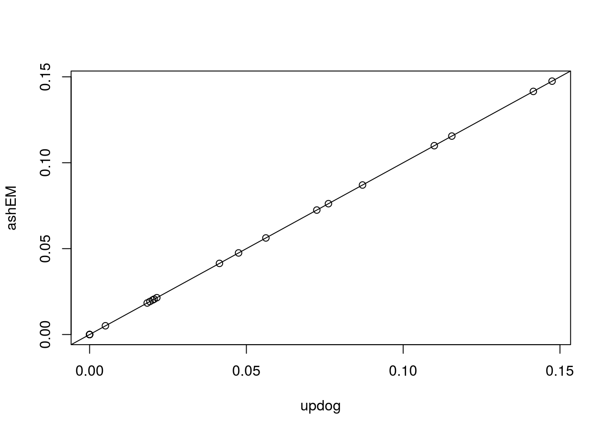
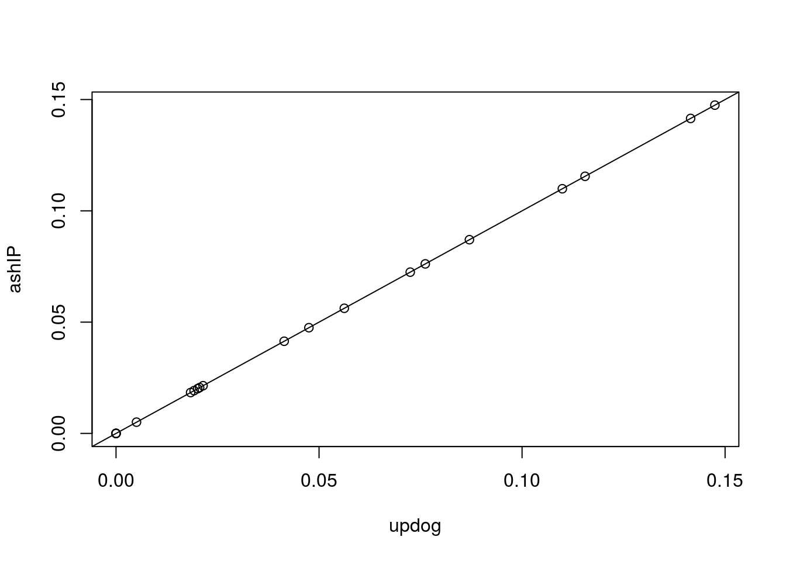
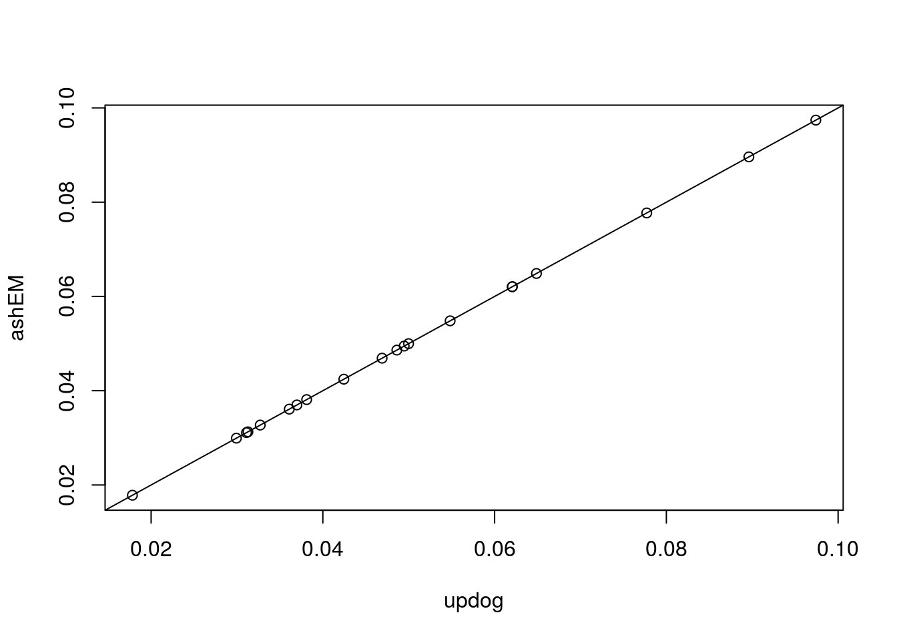
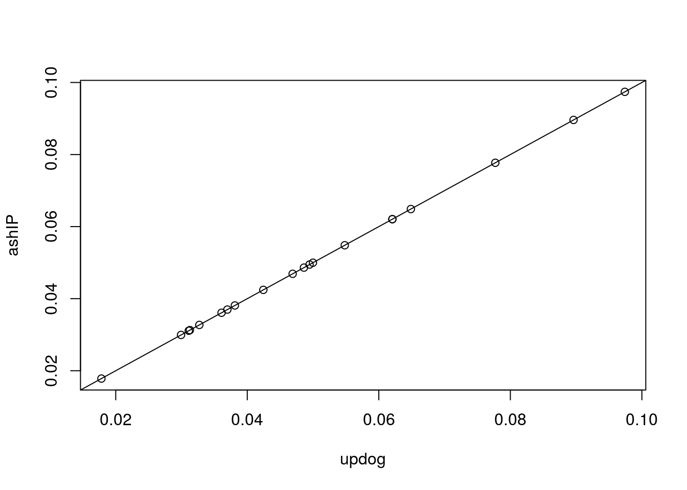

I repeat the analysis of this but use a larger dataset that is more ash-like.
set.seed(1)
library(updog)
library(ashr)
library(tidyverse)
library(microbenchmark)n <- 1000
k <- 20
lmat <- matrix(runif(k * n), nrow = n)
lmat <- lmat / rowSums(lmat)
weight_vec <- rep(1, n)
pi_init <- rep(1 / k, k)
lambda <- 0
mout <- microbenchmark(
upiout <- updog:::wem(weight_vec = weight_vec,
lmat = t(lmat),
pi_init = pi_init,
lambda = lambda,
itermax = 1000,
obj_tol = 10^-6),
apiout_em <- ashr:::mixEM(matrix_lik = lmat,
prior = rep(lambda + 1, k),
pi_init = pi_init)$pihat,
apiout_cv <- ashr:::mixIP(matrix_lik = lmat,
prior = rep(lambda + 1, k),
pi_init = pi_init)$pihat
)mout## Unit: milliseconds
## expr
## upiout <- updog:::wem(weight_vec = weight_vec, lmat = t(lmat), pi_init = pi_init, lambda = lambda, itermax = 1000, obj_tol = 10^-6)
## apiout_em <- ashr:::mixEM(matrix_lik = lmat, prior = rep(lambda + 1, k), pi_init = pi_init)$pihat
## apiout_cv <- ashr:::mixIP(matrix_lik = lmat, prior = rep(lambda + 1, k), pi_init = pi_init)$pihat
## min lq mean median uq max neval
## 8.083 8.127 8.476 8.339 8.785 11.45 100
## 16.448 19.139 19.909 20.186 20.740 24.19 100
## 13.676 14.244 15.843 14.415 14.844 112.58 100plot(upiout, apiout_em, xlab = "updog", ylab = "ashEM")
abline(0, 1)
plot(upiout, apiout_cv, xlab = "updog", ylab = "ashIP")
abline(0, 1)
n <- 10000
k <- 20
lmat <- matrix(runif(k * n), nrow = n)
lmat <- lmat / rowSums(lmat)
weight_vec <- rep(1, n)
pi_init <- rep(1 / k, k)
lambda <- 0
mout <- microbenchmark(
upiout <- updog:::wem(weight_vec = weight_vec,
lmat = t(lmat),
pi_init = pi_init,
lambda = lambda,
itermax = 1000,
obj_tol = 10^-6),
apiout_em <- ashr:::mixEM(matrix_lik = lmat,
prior = rep(lambda + 1, k),
pi_init = pi_init)$pihat,
apiout_cv <- ashr:::mixIP(matrix_lik = lmat,
prior = rep(lambda + 1, k),
pi_init = pi_init)$pihat
)mout## Unit: milliseconds
## expr
## upiout <- updog:::wem(weight_vec = weight_vec, lmat = t(lmat), pi_init = pi_init, lambda = lambda, itermax = 1000, obj_tol = 10^-6)
## apiout_em <- ashr:::mixEM(matrix_lik = lmat, prior = rep(lambda + 1, k), pi_init = pi_init)$pihat
## apiout_cv <- ashr:::mixIP(matrix_lik = lmat, prior = rep(lambda + 1, k), pi_init = pi_init)$pihat
## min lq mean median uq max neval
## 29.82 31.0 31.82 31.32 32.33 43.95 100
## 106.05 113.6 136.60 117.42 123.30 242.88 100
## 133.14 135.3 143.23 137.72 141.63 230.41 100plot(upiout, apiout_em, xlab = "updog", ylab = "ashEM")
abline(0, 1)
plot(upiout, apiout_cv, xlab = "updog", ylab = "ashIP")
abline(0, 1)
sessionInfo()## R version 3.5.0 (2018-04-23)
## Platform: x86_64-pc-linux-gnu (64-bit)
## Running under: Ubuntu 16.04.4 LTS
##
## Matrix products: default
## BLAS: /usr/local/lib/R/lib/libRblas.so
## LAPACK: /usr/local/lib/R/lib/libRlapack.so
##
## locale:
## [1] LC_CTYPE=en_US.UTF-8 LC_NUMERIC=C
## [3] LC_TIME=en_US.UTF-8 LC_COLLATE=en_US.UTF-8
## [5] LC_MONETARY=en_US.UTF-8 LC_MESSAGES=en_US.UTF-8
## [7] LC_PAPER=en_US.UTF-8 LC_NAME=C
## [9] LC_ADDRESS=C LC_TELEPHONE=C
## [11] LC_MEASUREMENT=en_US.UTF-8 LC_IDENTIFICATION=C
##
## attached base packages:
## [1] stats graphics grDevices utils datasets methods base
##
## other attached packages:
## [1] microbenchmark_1.4-4 forcats_0.3.0 stringr_1.3.1
## [4] dplyr_0.7.4 purrr_0.2.4 readr_1.1.1
## [7] tidyr_0.8.0 tibble_1.4.2 ggplot2_2.2.1
## [10] tidyverse_1.2.1 ashr_2.2-7 updog_0.99.0
##
## loaded via a namespace (and not attached):
## [1] reshape2_1.4.3 ggthemes_3.5.0
## [3] haven_1.1.1 lattice_0.20-35
## [5] Rmosek_7.1.3 colorspace_1.3-2
## [7] htmltools_0.3.6 yaml_2.1.19
## [9] rlang_0.2.0 pillar_1.2.2
## [11] foreign_0.8-70 glue_1.2.0
## [13] REBayes_1.3 readxl_1.1.0
## [15] modelr_0.1.2 bindrcpp_0.2.2
## [17] foreach_1.4.4 plyr_1.8.4
## [19] bindr_0.1.1 cellranger_1.1.0
## [21] munsell_0.4.3 gtable_0.2.0
## [23] rvest_0.3.2 codetools_0.2-15
## [25] psych_1.8.4 evaluate_0.10.1
## [27] knitr_1.20 RcppArmadillo_0.8.500.0
## [29] pscl_1.5.2 doParallel_1.0.11
## [31] parallel_3.5.0 broom_0.4.4
## [33] Rcpp_0.12.17 scales_0.5.0
## [35] backports_1.1.2 jsonlite_1.5
## [37] truncnorm_1.0-8 mnormt_1.5-5
## [39] hms_0.4.2 digest_0.6.15
## [41] stringi_1.2.2 grid_3.5.0
## [43] rprojroot_1.3-2 cli_1.0.0
## [45] tools_3.5.0 magrittr_1.5
## [47] lazyeval_0.2.1 crayon_1.3.4
## [49] pkgconfig_2.0.1 MASS_7.3-50
## [51] Matrix_1.2-14 xml2_1.2.0
## [53] SQUAREM_2017.10-1 lubridate_1.7.4
## [55] rstudioapi_0.7 assertthat_0.2.0
## [57] rmarkdown_1.9 httr_1.3.1
## [59] iterators_1.0.9 R6_2.2.2
## [61] nlme_3.1-137 compiler_3.5.0This R Markdown site was created with workflowr